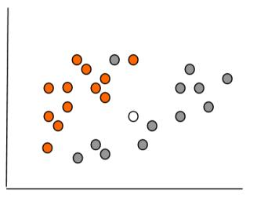
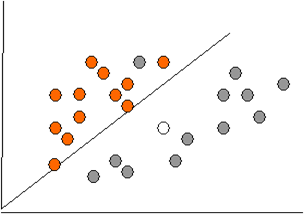
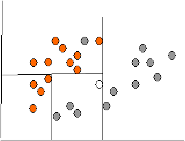
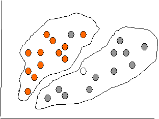

10. Data Mining.
Тапсырмалардың классификациясы. Ұқсастық функциясы
1. Data Mining. Тапсырмалардың классификациясы.
2. Data Mining. Ұқсастық функциясы.
10.1 Data Mining. Тапсырмалардың классификациясы
Жіктеу - бұл Data Mining-тің ең қарапайым
және жиі шешілетін міндет-терінің бірі. Жіктеу міндеттерінің
таралуына байланысты осы тұжырымда-маның мәнін нақты түсіну
қажет.
Жіктеу түсінігін бірнеше анықтамалар
негізінде мағынасын қарасты-райық.
Жіктеу - зерттелетін объектілерді, құбылыстарды,
процестерді түрлері, типтері бойынша және оларды зерттеудің ыңғайлылығы
үшін қандай да бір маңызды белгілер бойынша жүйелі түрде
бөлу.
Жіктеу дегеніміз - осы объектілердің ұқсастығын
немесе айырма-шылығын анықтау үшін жіктеу белгілері (бір
немесе бірнеше қасиеттер) бар объектілердің жиынтығы.
Жіктеу келесі ережелерді сақтауды талап етеді:
- әрбір бөлу актісінде тек бір негізді қолдану
қажет;
- бөлу пропорционалды болуы керек, яғни ұғымдарының
жалпы көлемі бөлінетін жалпы тұжырымдаманың көлеміне
тең болуы керек;
- бөлім мүшелері бір-бірін жоққа шығаруы
керек, олардың көлемі қиы-лыспауы керек;
- бөлу дәйекті болуы керек.
Жіктеуді мынадай белгілер бойынша ажыратуға болады
[31]:
- сыртқы белгілері бойынша көмекші жіктеу;
- табиғи классификация. Ол заттар мен құбылыстардың
ішкі қауымдас-тығын сипаттайтын маңызды белгілерге сәйкес
жасалады. Бұл ғылыми зерт-теудің нәтижесі және маңызды
құралы болып табылады, өйткені ол жіктелетін объектілердің
заңдылықтарын зерттеу нәтижелерін болжайды.
Таңдалған белгілерге, олардың
комбинациясына және ұғымдарды бөлу процедураларына
байланысты жіктеудің мынадай түрлері болуы мүмкін:
- қарапайым.Онда бөлу мүшелері тек екі тұжырымдамадан
тұрады, олардың әрқайсысы екіншісіне қайшы
келеді;
- күрделі - бір тұжырымдаманы әртүрлі негіздер бойынша бөлу және
осындай қарапайым бөлімдерді біртұтас синтездеу үшін қолданылады.
Мұндай жіктеудің мысалы-химиялық элементтердің периодтық
жүйесі.
Жіктеу дегеніміз - объектілерді (бақылауларды, оқиғаларды)
алдын-ала белгілі сыныптардың біріне жатқызу.
Жіктеу - бұл белгілі бір топтың
сипаттамаларын анықтауға қатысты қорытынды жасауға
мүмкіндік беретін үлгі. Осылайша, жіктеуді жүргізу үшін
белгілі бір оқиға немесе объект жататын топты сипаттайтын белгілер қолданылады.
Жіктеу міндеті көбінесе үздіксіз немесе
категориялық айнымалыларды таңдау негізінде категориялық тәуелді
айнымалыны болжау деп атайды.
Мысалы, компания клиенттерінің қайсысы
белгілі бір тауардың сатып алушысы, ал кім сатып алмайды, компания қызметін
кім пайдаланады, ал кім пайдаланбайды және т. б. тапсырмалардың бұл
түрі екілік жіктеу міндеттеріне жатады, оларда тәуелді айнымалы тек
екі мәнді қабылдай алады (мысалы, иә немесе жоқ, 0
немесе 1).
Жіктеудің тағы бір нұсқасы. Егер
тәуелді айнымалы алдын-ала анық-талған кластардың
кейбір жиынтығынан мәндерді қабылдай алатын болса, ондай
жіктеудің болжамы пайда болады. Мысалы, клиенттің қандай көлік
маркасын сатып алғысы келетінін болжау қажет болған кезде қолданылады.
Жіктеу бір өлшемді (бір белгі бойынша) және көп
өлшемді (екі немесе одан да көп белгілер бойынша) болуы мүмкін.
Биологтар ағзаларды жіктеу үшін дискриминация
мәселелерін шешуде көп өлшемді жіктеуді жасады. Осы бағытқа
арналған алғашқы жұмыстардың бірі Р.Фишердің
(1930) жұмысы болып саналады. Онда организмдер физикалық
параметрлерін өлшеу нәтижелеріне байланысты кіші түрлерге бөлінді.
Биология көп өлшемді жіктеу әдістерін жасау үшін ең
танымал және ыңғайлы орта болды.
Қарапайым мысалда жіктеу мәселесін қарастырайық.
Мысалы, туристік агенттіктің клиенттері туралы мәліметтер
базасы және олардың жасы мен
айлық табысы туралы ақпарат бар. Жарнамалық материалдың
екі түрі бар: қымбат және ыңғайлы демалыс,
сонымен қатар арзан демалыс. Тиісінше, клиенттердің екі класы анықталды:
1-класс және 2-класс. Деректер базасы 2-ші кестеде келтірілген.
Кесте 2
Туристік агенттік клиенттерінің деректер базасы
|
Клиент
коды |
Жасы |
Кіріс |
Класс |
|
1 |
18 |
25 |
1 |
|
2 |
22 |
100 |
1 |
|
3 |
30 |
70 |
1 |
|
4 |
32 |
120 |
1 |
|
5 |
24 |
15 |
2 |
|
6 |
25 |
22 |
1 |
|
7 |
32 |
50 |
2 |
|
8 |
19 |
45 |
2 |
|
9 |
22 |
75 |
1 |
|
10 |
40 |
90 |
2 |
Жаңа клиент қай сыныпқа жататынын және
жарнамалық материалдардың екі түрінің қайсысын
жіберу керектігін анықтаңыз.
Түсінікті болу үшін біз дерекқорымызды
екі өлшемді өлшемде (жас және табыс) 1 (қызғылт
сары белгі) және 2 (сұр белгі) сыныптарына жататын көптеген
нысандар түрінде ұсынамыз. Сурет 7-де екі кластағы объектілер
келтірілген.

Сурет 7 - Екі өлшемді өлшемдегі мәліметтер базасының
көптеген объектілері
Біздің проблемамыздың шешімі суретте ақ
белгімен көрсетілген. Жаңа клиенттің қай сыныпқа
жататынын анықтауға болады.
Жіктеу процесі
Жіктеу процесінің мақсаты-болжамды атрибуттарды
кіріс параметрлері ретінде пайдаланатын және тәуелді атрибуттың
мәнін алатын модель құру. Жіктеу процесі көптеген
объектілерді белгілі бір критерий бойынша сынып-тарға бөлу болып
табылады.
Классификатор-бұл белгілі бір нысан, ол алдын-ала
анықталған кластар-дың қайсысы объектінің
белгілер векторына жататынын анықтайды.
Математикалық әдістерді қолдана отырып
жіктеуді жүргізу үшін мате-матикалық жіктеу аппаратын қолдана
отырып жұмыс істеуге болатын объекті-нің ресми сипаттамасы болуы
керек. Мұндай сипаттама біздің жағдайда мәлі-меттер
базасы болып табылады. Әр объект (мәліметтер базасын жазу)
объек-тінің кейбір қасиеттері туралы ақпарат береді.
Бастапқы деректер жиынтығы (немесе деректерді
іріктеу) екі жиынға бөлінеді: оқыту және тестілеу.
Оқыту жиынтығы (training set) - модельді оқыту
(құрастыру) үшін пайдаланылатын мәліметтерді қамтитын
жиын.
Бұл жиынтықта мысалдардың кіріс және
шығыс (мақсатты) мәндері бар. Шығу мәндері
модельді оқытуға арналған.
Тест (test set) көптеген
құрамында, сондай-ақ кіру және шығу маңызы
бар мысалдар.
Жіктеу процесі екі кезеңнен тұрады: модель құру
және оны пайдалану.
Модель дизайны: алдын-ала анықталған көптеген
кластардың сипаттамасы.
Деректер жиынтығының әр мысалы бір
алдын-ала анықталған сыныпқа жатады.
Бұл кезеңде оқыту жиынтығы қолданылады.
Онда модель жасалады.
Алынған модель жіктеу ережелерімен, шешімдер ағашымен
немесе математикалық формуламен ұсынылған.
Модельді қолдану: жаңа немесе белгісіз мәндерді
жіктеу.
Модельдің дұрыстығын бағалау.
Сынақ мысалындағы белгілі мәндер алынған
модельді қолдану нәтижелерімен салыстырылады.
Дәлдік деңгейі - тест жиынтығындағы
дұрыс жіктелген мысалдардың пайызы.
Сынақ жиынтығы, яғни құрастырылған
модель сыналатын жиын жаттығу жиынына тәуелді болмауы керек.
Егер модельдің дәлдік көрсеткіші рұқсат
етілсе, клас белгісіз жаңа мысалдарды жіктеу үшін модельді қолдана
алады.
Жіктеу есептерін шешу үшін қолданылатын әдістер
Жіктеу үшін әртүрлі әдістер қолданылады:
-
шешім ағаштарының
көмегімен жіктеу;
-
Байес (аңғал)
классификациясы ;
-
жасанды нейрондық
желілерді қолдана отырып жіктеу;
-
тірек векторлары әдісімен
жіктеу;
-
статистикалық
әдістер, атап айтқанда сызықтық регрессия;
-
жақын көршінің
әдісін қолдана отырып жіктеу;
-
генетикалық
алгоритмдердің көмегімен жіктеу.
Жіктеу процесін кейбір әдістермен схемалық
шешу Сурет 8, 9, 10-да келтірілген.

Сурет 8- Сызықтық регрессия әдісімен жіктеу мәселесін
шешу
if X > 5 then grey
else
if Y > 3 then orange
else if X > 2 then grey
else orange

Сурет 9- Ағаш шешімдерін жіктеу мәселесін шешу

Сурет 10- Нейрондық желілерді жіктеу мәселесін шешу
Жіктеу дәлдігі: қате деңгейін бағалау
Жіктеудің дәлдігін бағалау
кросс-тексерудің көмегімен жүргізілуі мүмкін.
Кросс-тексеру (Cross-validation) - бұл сынақ
жиынтығындағы деректердің жіктелуінің дәлдігін бағалау
процедурасы, оны кросс-тексеру жиынтығы деп те атайды.
Тест жиынтығының жіктеу дәлдігі оқыту
жиынтығының жіктеу дәлдігімен салыстырылады. Егер сынақ
жиынтығының жіктелуі оқыту жиын-тығының жіктелуі
сияқты дәлдік бойынша бірдей нәтиже берсе, онда бұл
модель кросс-тексеруден өтті деп саналады.
Оқу және тест жиынтығына бөлу үлгіні
белгілі бір пропорцияда бөлу арқылы жүзеге асырылады. Мысалы,
оқу жиынтығы - деректердің үштен екісі және тест
жиынтығы - деректердің үштен бірі. Бұл әдіс көптеген
мысалдармен үлгілер үшін қолданылуы керек. Егер іріктеменің
көлемі аз болса, оларды пайдалану кезінде оқыту және тестілік
іріктемелер ішінара қиылысатын арнайы әдістерді қолдану ұсынылады.
Жіктеу әдістерін бағалау
Әдістерді бағалау келесі сипаттамаларға
сүйене отырып жүргізілуі керек: жылдамдық, ұялшақтық,
интерпретация, сенімділік.
Жылдамдық модельді құруға және
оны пайдалануға кететін уақытты сипаттайды.
Ұялшақтық, яғни бастапқы үй-жайлардың
кез-келген бұзылуына төзімділік шулы деректермен және
деректердегі жетіспейтін мәндермен жұмыс істеу мүмкіндігін
білдіреді.
Кластерлеу міндеті
Кластерлеу міндеті жіктеу міндетіне ұқсас,
оның логикалық жалғасы болып табылады, бірақ оның
айырмашылығы-зерттелетін мәліметтер жиынтығының
сыныптары алдын-ала анықталмаған.
«Кластерлеу» терминінің синонимдері – «Автоматты
жіктеу», «мұғалімсіз оқыту» және «таксономия».
Кластерлеу объектілер жиынтығын біртекті топтарға
(кластерлерге немесе сыныптарға) бөлуге арналған. Егер үлгі
деректері атрибут кеңістігіндегі нүктелер ретінде ұсынылса,
онда кластерлеу мәселесі «нүктелердің қоюлануы» анықтамасына
дейін азаяды.
Кластерлеудің мақсаты-бар құрылымдарды
іздеу [32].
Кластерлеу-бұл сипаттамалық процедура, ол ешқандай
статистикалық қорытынды жасамайды, бірақ талдау жүргізуге
және «деректер құрылымын» зерттеуге мүмкіндік береді.
«Кластер» ұғымы анық емес: әр
зерттеуде өзінің «кластерлері» бар.
Кластерді ортақ қасиеттері бар объектілер
тобы ретінде сипаттауға болады.
Кластердің сипаттамаларын екі белгі деп атауға
болады: ішкі біртектілік, сыртқы оқшаулау.
Көптеген мәселелерді шешуде талдаушылар қойған
сұрақ - деректерді көрнекі құрылымдарға қалай
ұйымдастыруға болады, яғни таксономияны кеңейту.
Кластерлеу алғашқыда биология, антропология,
психология сияқты ғылымдарда кеңінен қолданылды.
Экономикалық мәселелерді шешу үшін ұзақ уақыт
бойы экономикалық деректер мен құбылыстардың
ерекшелігіне байланысты кластерлеу аз қолданылды.
Кластерлік талдаудың әртүрлі әдістерін
қолдану нәтижесінде әртүрлі формадағы кластерлер
алынуы мүмкін екенін атап өткен жөн. Мысалы, «тізбекті»
кластерлер ұзын «тізбектермен», ұзартылған пішінді
кластерлермен және т.б. ұсынылған кезде мүмкін болады,
ал кейбір әдістер еркін пішінді кластерлер құра алады.
Әр түрлі әдістер белгілі бір мөлшердегі
кластерлерді құруға тырысуы мүмкін немесе мәліметтер
жиынтығында әртүрлі мөлшердегі кластерлердің
болуын болжауы мүмкін.
Кластерлеудің әртүрлі әдістерін қолдану
нәтижесінде әртүрлі нәтижелер алынуы мүмкін. Бұл
қалыпты жағдай және белгілі бір алгоритмнің ерекшелігі
болып табылады.
Бүгінгі таңда жүзден астам түрлі
кластерлік алгоритмдер жасалды.
Деректерді бөлуге негізделген алгоритмдер
(Partitioning algorithms), соның ішінде итеративті:объектілерді k
кластерлерге бөлу, кластерлеуді жақсарту үшін нысандарды
итеративті қайта бөлу.
Иерархиялық Алгоритмдер (Hierarchy algorithms):
агломерация: әр объект бастапқыда кластер болып табылады,
бір-бірімен байланысқан кластерлер үлкен кластерді құрайды
және т. б.
Нысан концентрациясына негізделген әдістер
(Density-based methods): объектілерді қосу мүмкіндігіне
негізделген.
Грид-әдістер (Grid-based methods): нысандарды грид-құрылымда
кванттау.
Модельдік әдістер (Model-based): деректерге сәйкес
келетін кластерлерді табу үшін үлгіні пайдалану.
Кластерлеу сапасын бағалау
Кластерлеу сапасын бағалау мынадай рәсімдер
негізінде жүргізілуі мүмкін:
- қолмен тексеру;
- бақылау нүктелерін белгілеу және алынған
кластерлерде тексеру;
- модельге жаңа айнымалыларды қосу арқылы
кластерлік тұрақтылықты анықтау;
- әр түрлі әдістерді қолдана отырып
кластерлер құру және салыстыру. Кластерлеудің әртүрлі
әдістері әртүрлі кластерлер құра алады және
бұл қалыпты жағдай. Алайда, әртүрлі әдістермен
ұқсас кластерлерді құру кластерлеудің дұрыстығын
көрсетеді.
Кластерлеу процесі
Кластерлеу процесі таңдалған әдіске
байланысты және әрдайым итеративті болады. Бұл қызықты
процесс бола алады және әртүрлі параметрлерді таңдау
бойынша көптеген эксперименттерді қамтуы мүмкін. Мысалы, қашықтық
өлшемдері, айнымалыларды стандарттау түрі, кластерлер саны және
т.б. алайда, эксперименттер өздігінен аяқталмауы керек, өйткені
кластерлеудің түпкі мақсаты зерттелетін деректердің құрылымы
туралы мазмұнды ақпарат алу болып табылады. Алынған нәтижелер
қалыптасқан кластерлерді дәл сипаттау үшін объектілердің
қасиеттері мен сипаттамаларын одан әрі түсіндіруді, зерттеуді
қажет етеді.
Кластерлік талдауды
қолдану
Кластерлік талдау әртүрлі салаларда қолданылады.
Бұл көптеген ақпа-ратты жіктеу қажет болған кезде
пайдалы. Кластерлік талдау арқылы жүр-гізілген көптеген
жарияланған зерттеулерге шолуды Хартиган берді (Хартиган, 1975). Мәселен,
медицинада ауруларды кластерлеу, ауруларды немесе олардың белгілерін
емдеу, сондай-ақ пациенттердің, препараттардың таксономиясы және
т.б. археологияда тас құрылыстар мен ежелгі объектілердің
таксономиясы белгіленеді. Менеджментте кластерлеу мәселесінің
мысалы персоналды әртүрлі топтарға бөлу, тұтынушылар
мен жеткізушілерді жіктеу, ақау пайда болатын ұқсас өндірістік
жағдайларды анықтау болады. Медицинада-симптомдардың
жіктелуі. Әлеуметтануда кластерлеу міндеті - респонденттерді біртекті
топ-тарға бөлу.
Маркетингтік зерттеулерде кластерлік талдау кеңінен
қолданылады-теориялық зерттеулерде де, әртүрлі
объектілерді топтау мәселелерін шешетін тәжірибелі маркетологтар. Бұл
жағдайда тұтынушылар топтары, өнімдер және т. б. туралы
мәселелер шешіледі.
Сонымен, маркетингтік зерттеулерде кластерлік талдауды қолданудағы
маңызды міндеттердің бірі тұтынушының мінез-құлқын
талдау болып табылады, атап айтқанда: әр топтан клиенттің
мінез-құлқы туралы және оның мінез-құлқына
әсер ететін факторлар туралы толық түсінік алу үшін тұтынушыларды
біртекті сыныптарға топтастыру. Бұл мәселе Клакстон, Фрай және
Портис (1974), Киль және Лейтон (1981) еңбектерінде егжей-тегжейлі
сипатталған.
Кластерлік талдауды шеше алатын маңызды міндеттердің
бірі - позициялау, яғни нарықта ұсынылатын жаңа өнімді
орналастыру керек тауарды анықтау. Кластерлік талдауды қолдану нәтижесінде
карта жасалады.Оған сәйкес нарықтың әртүрлі
сегменттеріндегі бәсекелестік деңгейін және осы сегментке ену
мүмкіндігі үшін өнімнің тиісті сипаттамаларын анықтауға
болады. Мұндай картаны талдау арқылы нарықта бар тауарларды ұсынуға
немесе жаңаларын жасауға болатын жаңа, бос емес тауарларды
анықтауға болады.
Кластерлік талдау, мысалы, компанияның тұтынушыларын
талдау үшін де ыңғайлы болуы мүмкін. Ол үшін
барлық клиенттер кластерлерге топтастырылады және әр кластер үшін
жеке алгоритм жасалады. Бұл тәсіл талдау объектілерін едәуір қысқартуға
және сонымен бірге клиенттердің әр тобына жеке-жеке жүгінуге
мүмкіндік береді.
Жіктеу, Data Mining-тің қарапайым міндеті
бола отырып, «мұғаліммен оқыту» стратегиясын білдіреді, оны
шешу үшін оқу үлгісінде кіріс айнымалыларының да, шығыс
(мақсатты) айнымалылардың да мәндері болуы керек.
Жіктеу мәселесі әртүрлі әдістердің
көмегімен шешіледі, ең қарапайым - сызықтық
регрессия. Әдісті таңдау бастапқы мәліметтер жиынтығын
зерттеуге негізделуі керек. Кластерлеу мәселесін шешудің ең көп
таралған әдістері: k-орташа әдісі (тек сандық
атрибуттармен жұмыс істейді), иерархиялық кластерлік талдау
(символдық атрибуттармен де жұмыс істейді), SOM әдісі.
Бақылау сұрақтары:
1. Жіктеу дегеніміз не? Оның маңыздылығын
атаңыз
2. Кластерлеу дегеніміз не?
3. Үлкен көлемді деректерді өңдеудегі
кластерлеудің маңыздылығы
4.
Кластерлеу мәселесін
шешудің ең көп таралған әдістерін қарастырыңыз.